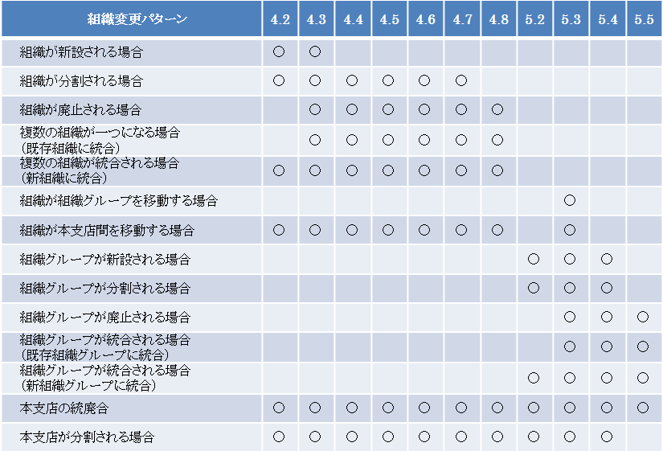

3.3. 設定例¶
組織変更をする場合、以下の各作業を実施する必要があります。
4.2. 組織の追加
4.3. 組織に関わるマスタの変更
4.4. 台帳系の組織の変更
4.5. 既に計上された仕訳の対応
4.6. 残高の移行（未消込残高の移行）
4.7. 残高の移行
4.8. 組織の有効期間分割
組織変更の代表的なパターンについて、必要な作業を以下に示します。

3.3.1. 組織が新設される場合¶
新しい組織を登録し、関連するマスタに対してその組織を設定します。
3.3.2. 組織が分割される場合¶
分割するため新しい組織を登録します（組織が新設される場合 の作業）。分割元の組織について、分割後の期間に計上された仕訳の対処をします。
その後、残高を分割するため、新組織に対して残高を移行してください。
3.3.3. 組織が廃止される場合¶
廃止する組織を使用している関連マスタを更新します。そして、廃止後の期間にその組織に計上された仕訳の対処をし、残高を移行してください。
3.3.4. 複数の組織が一つになる場合（既存組織に統合)¶
統合後に存続しない組織について組織が廃止される場合の作業を実施します。残高の移行先は、統合先の組織となります。
3.3.5. 複数の組織が一つになる場合（新組織に統合）¶
統合する新組織を組織が新設される場合の作業で作成します。その後、統合後に存続しない組織について組織が廃止される場合の作業を実施します。
3.3.6. 組織が組織グループを移動する場合¶
組織グループ所属を変更するのみで、組織グループの移動は完了です。
3.3.7. 組織が本支店間を移動する場合¶
本支店間を移動する場合、本支店勘定を考慮する必要があります。
組織の移動に伴い、その本支店間で本支店勘定を起こす必要がある場合、元の組織を廃止し、移動後の組織を新しい組織コードで作成します。その際は、組織が廃止される場合と組織が新設される場合の作業を実施してください。
本支店勘定を起こす必要がない場合、組織が組織グループを移動する場合の作業を実施します。
また、移動する組織が本支店の代表組織の場合、その組織に本支店勘定の残高があります。この残高についても新しい本支店に移動するのか、元の本支店の新しい代表組織に移行するのかを検討してください。
3.3.8. 組織グループが新設される場合¶
新しい組織グループを登録し、関連するマスタに対してその組織グループを設定します。その後、新しい組織グループに組織を所属させます。
3.3.9. 組織グループが分割される場合¶
分割するため新しい組織グループを登録します（組織グループが新設される場合の作業）。その後、組織が組織グループを移動する場合の作業を実施し、新しい組織グループに所属する組織を移動します。なお、所属する組織についても同様に分割する場合は、組織が分割される場合の作業を実施してください。
3.3.10. 組織グループが廃止される場合¶
廃止する組織グループを使用している関連マスタを更新します。そして、廃止後の期間にその組織グループに所属している組織について、組織グループ所属を更新します。
3.3.11. 組織グループが統合される場合（既存組織グループに統合）¶
組織が組織グループを移動する場合の作業を実施し、統合後の組織グループに所属する組織を移動します。そして、統合後に存続しない組織グループについて組織グループが廃止される場合の作業を実施します。
3.3.12. 組織グループが統合される場合（新組織グループに統合）¶
統合する新組織グループを組織グループが新設される場合の作業で作成します。その後、組織が組織グループを移動する場合の作業を実施し、統合後の組織グループに所属する組織を移動します。そして、統合後に存続しない組織グループについて組織グループが廃止される場合の作業を実施します。
3.3.13. 本支店の統廃合¶
統合するために新組織グループを作成する場合、組織グループが新設される場合の作業で作成します。その後、組織が本支店間を移動する場合の作業で統合先に組織を移動した後、廃止する本支店グループに対して組織グループが廃止される場合の作業を実施します。
なお、統合する本支店間の本支店勘定については、組織グループを統合した後、統合後の組織グループの本支店勘定に振り替えることで、結果的に相殺されます。以下のように、本店勘定と支店勘定を移行してください。
統合前の組織グループの代表組織の本店勘定を、統合後の組織グループの本店勘定に移行します。
統合後の組織グループの支店勘定は新しく作成します。統合前の組織グループの支店勘定は、新しい支店勘定に振り替えてください。
パラメータの本支店処理区分が1：支店別の場合、支店の代表組織に計上されている各支店勘定を相殺してください。
3.3.14. 本支店が分割される場合¶
分割後の新しい組織グループを組織グループが新設される場合の作業で作成します。その後、組織が本支店間を移動する場合の作業で分割先に組織を移動します。
組織も分割する場合は組織が分割される場合の作業を実施します。